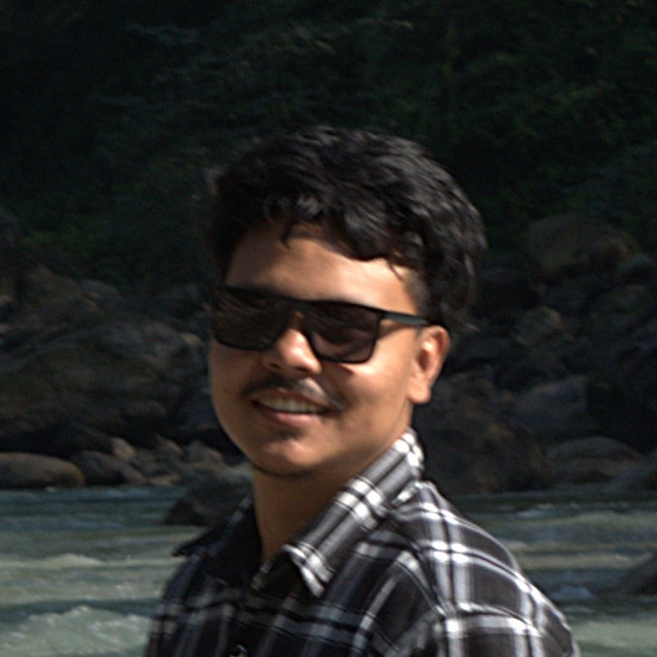

Non-Profit Finance & Financial Systems
Sumesh Khadgi
Balancing the books for organisations doing work that matters; multi-country fund accounting, grant compliance, and the financial systems that hold it all together.
About
SummaryNon-profit finance professional with 5+ years' experience spanning multi-country fund accounting, grant compliance, and financial systems implementation. Currently leading the architectural design of a Microsoft Dynamics 365 Business Central rollout across a four-country charity operation — building multi-entity consolidation, SORP-compliant classification, and donor reporting frameworks from the ground up.
Combines hands-on FCDO grant management and audit readiness with governance experience as Treasurer of a national youth-led NGO, overseeing a NPR 10 crore annual budget. XERO Level 2 Certified, with a track record of reducing coding error rates and strengthening financial controls across cross-border finance teams.
Experience
Professional Record- Leading architectural design of a Microsoft Dynamics 365 Business Central implementation — a seven-dimension accounting model, multi-entity company structure, intercompany accounts, and SORP CA/FR/GV classification logic — in coordination with senior leadership.
- Own the monthly close cycle: receive, review, and reconcile cashbook reports from four country finance teams, and upload invoices, bills, and consolidated entries into XERO.
- Prepare and monitor FCDO financial reports, claims, and budgets against donor timelines; run cost-centre analysis across schools and locations and regular budget variance analyses.
- Reduced incorrect account-coding error rates from 20% to 5% across 4,000+ monthly transaction lines through structured coaching and a Capacity Development Plan spanning four countries.
- Deliver 100% of required external audit documentation on time with zero material findings, including direct liaison with auditors on grant, expense, and Gift Aid matters.
- Present financial and operational insights through dashboards, KPI cards, and a structured multi-country audit findings tracker.
- Pilot AI-assisted tools for data validation, variance analysis, and reporting support under appropriate human review and governance controls.
- Supported HubSpot–XERO integration to improve donor traceability and automated Gift Aid form processing.
- Supported fundraising bids and proposals — including EAC and BBC Radio 4 Appeal — through budget verification, MoU drafting, and cash flow projections.
- Prepared monthly income reports and reconciliation statements, including weekly reconciliation reviews with the fundraising team.
- Delivered ongoing capacity development to finance teams across Nepal, Cambodia, Madagascar, and Myanmar through one-to-one coaching and structured report reviews.
- Led preparatory groundwork — setup, documentation, training, demo environments — for a unified accounting system rollout across country programmes.
- Served as key liaison to external auditors via the Inflo platform across annual, internal, and donor-specific audits.
- Conducted internal audits and monitored cash flow, preparing monthly financial reports with activity-level budget tracking.
- Prepared monthly payroll and grant financial reports for institutional donors, and performed monthly cash and bank reconciliations.
- Ensured compliance with TDS payment, E-TDS filing, and tax return filing under the Income Tax Act of Nepal.
- Analysed budget vs. actual expenditure across program grants, identifying and resolving variances.
- Oversaw HR administration for program staff and managed logistics, procurement, and quarterly asset verification.
- Entered and maintained financial data in accounting software, managing accounts payable and receivable.
- Assisted in preparing documentation for audits and compliance reviews.
- Compiled financial data and prepared reports, coordinating across departments.
- Collaborated with senior article trainees to conduct audits and managed E-TDS processes for clients.
- Executed data entries in accounting systems and prepared bank reconciliation statements for clients.
Core Skills
ToolkitBoard & Governance
Concurrent · VolunteerHeld alongside UWS employment, in a volunteer governance capacity following prior staff tenure at YUWA.
- Hold mandatory signatory authority for all banking transactions and approve annual and project-specific budgets alongside two co-signatories — overseeing an annual budget of approximately NPR 10 crores.
- Lead capacity development and mentoring for the finance department, reducing staff turnover and stabilising operations through leadership transitions and project closures.
- Present financial reports to the Board regularly to support data-driven governance, and ensure the statutory audit is conducted annually — presenting results to General Members at the AGM.
- Serve as primary liaison with donors on key financial matters and mentor incoming Executive Board members for handover.
- Facilitated financial literacy sessions for young people, and helped develop YUWA's organisational financial strategic plan and priorities.
- Represented YUWA in trainings, seminars, consultations, and conferences to strengthen organisational position and reach.
- Received mentorship in organisational development, financial and procurement practice, and inclusive youth participation from thematic leads at YUWA and UWS.